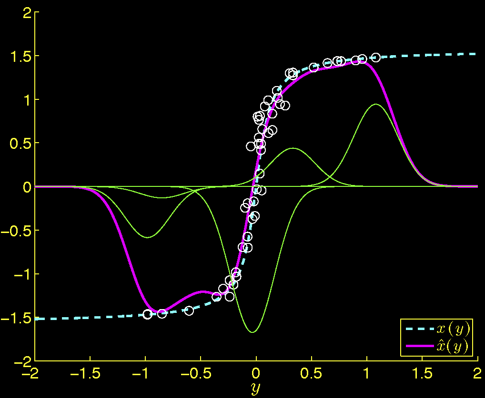
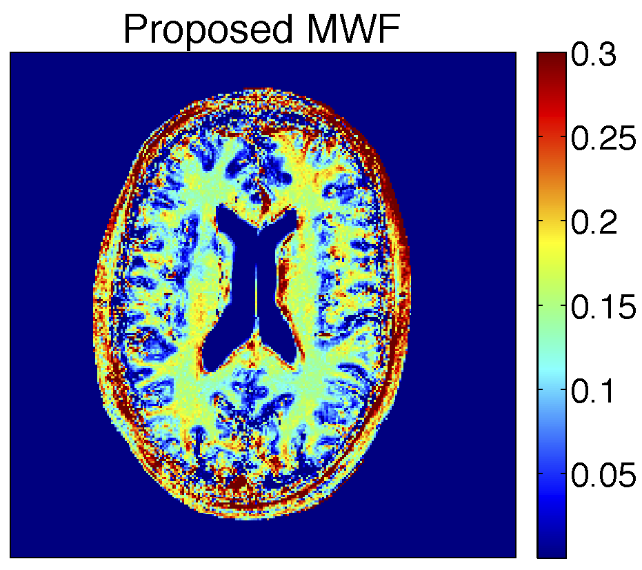

My thesis work is in the field of quantitative MRI (QMRI), where we seek to use MRI data to image MR biomarkers, or measurable tissue properties of interest. QMRI has potential to be more informative than conventional MRI. Conventional MRI is qualitative: it produces images comprised of voxels (i.e., 3D pixels) that are informative only relative to each other, not individually. Conventional MRI voxels are qualitative because the MR signal that they localize is a complex function of not only biomarkers but also two types of confounds: nuisance markers that quantify MRI system imperfections and acquisition parameters that characterize the MRI system's tunable "knobs". QMRI seeks to remove confound influence by directly imaging the biomarkers of interest: each QMR image voxel is a measurement of a given biomarker at a specific location. QMRI therefore provides localized biomarker measurements (e.g., myelin water content) related to a specific physiological process (e.g., demyelination) that can, through longitudinal study, be used to monitor the onset and progression of disease (e.g., multiple sclerosis).
Despite its potential for increasing the specificity of MRI, QMRI poses several challenges beyond those of conventional MRI that currently limit its feasibility for routine clinical use. My thesis seeks to identify and address some of these challenges.
Accurate biomarker quantification has traditionally required multiple MR scans and thus long scan times. In general, it is not obvious how to best tune each scan's various acquisition parameters to enable reliable biomarker estimation.
We introduced a systematic statistical method to design fast QMRI acquisitions that enable precise parameter estimation. Our method finds acquisition parameters that minimize the maximum (i.e., worst-case) imprecision subject to time and hardware constraints. As a simple example, we applied the method to design a new acquisition for estimating relaxation parameters T1 and T2 in white matter and grey matter (GM) regions of the human brain. paper slides
Standard biomarker estimation methods are practical for simple problems but scale poorly with the number of (biological or nuisance) markers. For more challenging problems involving greater numbers of markers, standard methods are impractically slow.
We introduced a considerably more scalable algorithm that approaches biomarker estimation using modern machine learning ideas. Our method samples many combinations of biomarkers and nuisance markers and uses the known MR signal model to simulate corresponding measurements. We then take these marker-measurement pairs as training points and learn from them an estimator designed to not only fit training points but also map unseen measurements to reasonable biomarker estimates. We demonstrated that the algorithm performs comparably to a popular standard method for T1 and T2 estimation, but is at least 23x faster. paper slides
Myelin encases neuronal white matter (WM) axons. Myelin loss is central to the development of demyelinating disorders such as multiple sclerosis. Bulk MR signal arises from multiple water compartments with different relaxation rates, and the fastest-relaxing compartment is due to water trapped between myelin bilayers. Myelin water fraction (MWF) denotes the proportion of MR signal arising from the fast compartment relative to total signal, and is a biomarker for myelin content. MWF imaging could thus increase the specificity of MRI for demyelinating disorders.
Even the simplest multi-compartmental MR signal models of myelin involve 6-7 biomarkers and nuisance markers per voxel, rendering fast scan design and practical biomarker estimation challenging using conventional methods. We applied the tools discussed above to both acquire MWF data and estimate MWF images substantially faster than gold-standard methods.
T1 estimates in milliseconds from (left) a slow reference acquisition and (right) a fast precision-optimal acquisition design. Scan design yields T1 estimates comparable those of the reference scan, but in considerably less time.
1D illustration of machine learning-inspired scalable biomarker estimation. An unknown true function is approximated by optimally weighted sums of kernel functions centered at simulated training points.
Proof-of-concept MWF estimates from a healthy volunteer using precision-optimized MR acquisition design and scalable biomarker estimation.
Metamaterials are composite materials typically comprised of a repeated array of sub-wavelength inclusions. They are typically engineered to have unusual electromagnetic responses, governed not by the constituent materials, but rather the composite structure. In particular, certain metamaterials exhibit a hyperbolic dispersion relation, and thereby a negative refractive index. These hyperbolic metamaterials have garnered much attention for various optical applications, including super-lensing and reduced-visibility cloaking.
There is especial interest directed towards the development of single-photon emitters, or "guns", for potential application in quantum cryptography. For efficient single-photon emission, it is important to maintain a high spontaneous emission rate. Prior work has predicted, but not empirically proven, that hyperbolic metamaterials can increase emission rates.
Our work provides experimental evidence of a significant increase of spontaneous emission rates, in the sub-micrometer vicinity of a hyperbolic metamaterial. We observe a sixfold reduction (compared to several controls) in the emission lifetime of an 81nm dye film, in qualitative agreement with theory. This serves as evidence of an anomalously high density of photonic states in metamaterials, and suggests that metamaterials are useful for the development of single-photon guns. paper
Top: Hyperbolic metamaterial sample (left) and schematic (right). Bottom: Emission lifetime of dye film deposited on is 6x faster than pure-alumina and gold/silver film-on-glass controls.
Einstein's theory of general relativity postulates that gravitational waves emanating from prominent cosmic events cause minute ripples in space-time. The Laser Inferferometer Gravitational-Wave Observatory (LIGO) is a collection of facilities that seek to directly detect such space-time perturbations. These facilities are comprised of gigantic (kilometer-scale) inteferometers designed to measure characteristic variations in the interferometer arm lengths with high accuracy, as evidence of gravitational waves.
The space-time perturbations that LIGO seeks are predicted to be on the miniscule order of 10-22 meters, a degree of sensitivity that requires consideration of subtle interference mechanisms such as seismic motion. To compensate for such bulk effects, the optical components of LIGO were originally designed to freely swing from metal brackets bolted to seismic isolation "stacks". However, this passive isolation system was found to provide insufficient sensitivity by itself, and interest grew for installation of a more sophisticated, actively controlled isolation system.
Our work models and characterizes the vibration mechanics of LIGO's multi-stage passive isolation stacks. In particular, our model identifies parameters describing dominant modes of motion and guides efficient active control of LIGO's isolation stacks. technical note
Updates--Subsequent active isolation efforts have recently shown promise in increasing sensitivity to a level where gravitational wave detection is possible.
Dominant translational (top) and rotational (bottom) eigenmodes of a typical seismic isolation stack at LIGO. The colorbar shows maximum displacements from equilibrium.